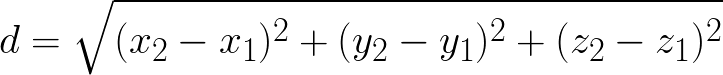

This week you learned how to add features to a class by extending it; this is called inheritance. You also learned how to use constructors with inheritance, and how to redefine existing inherited methods, using the process called overriding.
For this lab, you're going
to create a new version of the simplified
SimplePoint class shown here. Your new
Point3D class should extend
the SimplePoint class and add support for
a "Z" order.
The Point3D Class
To the right you'll find a simplified UML diagram for the
SimplePoint class, along with the UML diagram
for your new Point3D class. The upward-facing arrow
in the diagram means that Point3D is a subclass
of the SimplePoint class.
Your new class should have:
- Two overloaded constructors. One that sets all three fields
to
0, and one that initializes all three fields. Of course, both constructors should call thesuper()constructor to initialize thexandyfields contained in the superclassPoint. - An accessor method,
getZ()that retrieves the Z value of the point. (Of course, you use the inherited methods,getX()andgetY()to retrieve the other two inherited fields.) - An overloaded mutator method,
setLocation()that allows you to set all three fields at once. - An overriden version of
equals()that returnstruewhen all three coordinates are equivalent. Remember that when writingequals()you:- first check to see if the parameter matches the type of your
class, using
instanceofand returnfalseif not. - then you cast the
Objectparameter to the correct type before doing the comparison.
- first check to see if the parameter matches the type of your
class, using
- Extend the class by adding a
distanceTo()method that returns the distance between this point and another. The formula for finding the distance between two 3D points is:
